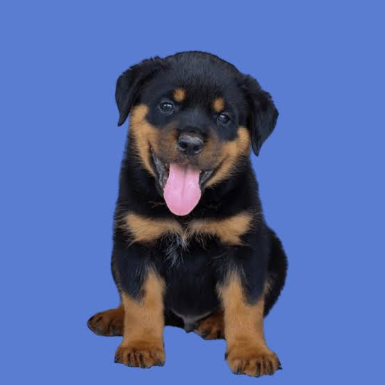
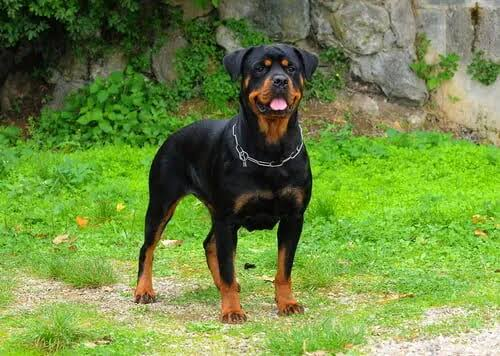

El Rottweiler es una raza de perro originaria de Alemania, relacionada históricamente con la ciudad de Rottweil. Sus antepasados fueron utilizados para ayudar a los comerciantes y carniceros a transportar y proteger el ganado. Es un perro de tamaño mediano a grande, con una constitución fuerte, compacta y musculosa. Su pelaje es corto y generalmente de color negro con marcas marrones o rojizas en determinadas partes del cuerpo, como el hocico, pecho y patas. El Rottweiler es conocido por ser fuerte, inteligente, seguro de sí mismo y trabajador. Puede establecer un vínculo muy cercano con su familia. Debido a su fuerza y tamaño, es importante que reciba una educación y socialización adecuadas desde joven. Históricamente fue utilizado para conducir y proteger ganado, además de ayudar a transportar carros. Actualmente puede desempeñarse como perro de trabajo, guardia, rescate y en determinadas tareas policiales. Aunque tiene una apariencia imponente, su comportamiento depende en gran medida de factores como la genética, la educación, la socialización y el entorno en el que crece. Esperanza de vida: aproximadamente 8-10 años.
